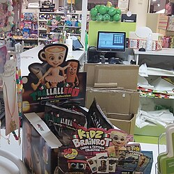

Italian brainrot
{kind=link}
Italian brainrot is a series of internet memes that emerged in early 2025 characterized by AI-generated absurd and surrealist images of creatures who are given Italian pseudo-names. [1][2] The phenomenon quickly spread across social media platforms such as TikTok and Instagram, going viral owing to its combination of sloppy aesthetics, synthesized Italian voiceovers, grotesque or humorous visuals, abstractism, and nonsensical narrative.[2][3]
Origin
In October 2023, Internet users created various memes featuring American actor and wrestler Dwayne Johnson in which he is depicted as rhyming about absurd topics. In one video, he uses the nonsense phrase "Tralalero tralala", and later rhymes it with "smerdo pure nell'aldilà" ("I shit even in the afterlife"). The phrase was later used as the basis for Italian brainrot.[4]
Although the exact origin of Italian brainrot is unclear, the character Tralalero Tralala is widely considered to be the first example of the trend.[5][6] The creation of the character is often attributed to the TikTok user @eZburger401, who reportedly posted a video featuring the character in January 2025. The user was banned after posting, potentially due to its accompanying audio containing profanity.[7][8] Later, another user @elchino1246 posted a video using Tralalero Tralala's audio, accompanied by an image of a shark mixed with a pigeon.[6] On 13 January 2025, another user @amoamimandy.1a created a now-deleted post using the audio, featuring an AI-generated image of a shark wearing shoes. This video gained 7 million views.[7]
Description
Italian brainrot is characterized by absurd images or videos created using generative artificial intelligence. It typically features hybrid figures combining animals with everyday objects, foods, and weapons.[9] They are given Italianized names or incorporate stereotypical Italian cultural markers and are accompanied by AI-generated audio narration in Italian, which is often nonsensical.[5] The names of these characters often have Italian suffixes, such as -ini or -ello.[10]
The term brain rot was named Oxford Word of the Year in 2024, and refers to the deteriorating effect on one's mental state when overconsuming "trivial or unchallenging content" online. The term can also refer to the content itself.[11] Online users often use this label to acknowledge the ridiculousness of Italian brainrot, while recognising the growing amount of AI slop present online.[5] Fans have created various stories featuring characters from Italian brainrot,[5][12] which has been described as a form of internet folklore with overly dramatic vocal delivery and increasingly exaggerated versions.[13]
Characters
{kind=link}
{kind=link}
{kind=link}
{kind=link}
{kind=link}
{kind=link}
{kind=link}
Italian brainrot features various AI-generated characters (referred as just "animals"). Several characters are hybrids, often combining animals with everyday objects and various fruits.[9]
- Tralalero Tralala
- The first viral character of the genre – a three-"legged" shark wearing Nike sneakers.[5][14] It is described as athletic, being able to run at superhuman speeds and jump high.[15]
- Tung Tung Tung Sahur
- An anthropomorphic wooden log who holds a wooden bat.[16][17] Although considered part of Italian brainrot, it has Indonesian origin.[14] The "Tung Tung Tung" in its name is onomatopoeia of how Indonesians traditionally beat kentungan slit drums to commence sahur, the pre-dawn meal that Muslims eat before fasting during Ramadan.[17] The word tung also means "rumbling" in Sundanese, spoken in Indonesia.[18] @noxaasht originally made the character in February 2025, and it has become its own meme outside the context of Italian brainrot.[19][20]
- Bombardiro Crocodilo[a]
- A hybrid creature with the head of a crocodile and the body of a World War II-era twin-prop bomber.[1][5][21] He is the brother of a goose with fighter jet wings named Bombombini Gusini.[10] In its lyrics, it is said to be bombing civilians in Gaza.
- Trippi Troppi
- Often depicted as a cat with a shrimp's body, though some videos use the name to describe an obese bear with the head of a fish.[4][22] The latter design has been nicknamed the "King of the Sea".[22]
- Ballerina Cappuccina[b]
- A female ballerina wearing a tutu and pointe shoes with a cappuccino mug as a head. The original meme featured her pirouetting gracefully. She has been described as being married to a ninja named Cappuccino Assassino until she cheated on him with Tung Tung Tung Sahur.[14] She also has a sister named Espressona Signora.[23]
- Chimpanzini Bananini
- A chimpanzee with a banana as a body, who has been described as "indestructible" and considered one of the genre's "main characters".[22]
Reception
{kind=link}

Italian brainrot gained notoriety in many regions such as the United States, South Korea, and Germany.[8] Various brands have replicated the memes for use in marketing content on social media.[8][12] Polish radio channel Polskie Radio noted that the meme is popular among Generation Alpha "because it's stupid, funny, and veeeery addictive".[24] Polskie Radio highlighted how the meme has been adapted into other media, such as Roblox games, music remixes, and quizzes.[24] Radio France Internationale called the usage of pseudo-Italian names amongst characters "a bit problematic".[25] Daily German newspaper Die Tageszeitung called Italian brainrot a "creative approach to technology, language, and pop culture".[26] China's Legal Daily compared its popularity among young children in the country to Elsagate.[27]
The likenesses of some Italian brainrot characters have been used to sell toys and non-fungible tokens (NFTs),[4] as well as being the centerpiece of the popular Roblox game Steal a Brainrot.[28] Italian brainrot also inspired a variety of volatile meme coins, such as "Italianrot", which was launched in March 2025.[29][30] In Italy, several newsstands began selling "Skifidol Italian Brainrot Trading Card Games", inspired by the memes and commercialized for a younger audience.[31] The release led to a noticeable rise in Generation Alpha consumers, with L'Espresso comparing the surge to the popularity of Garbage Pail Kids cards during their Italian debut.[32] In 2025, Panini released an Italian brainrot sticker album.[33]
Hungarian prime minister Viktor Orbán released a TikTok video where a 3D model of Tung Tung Tung Sahur is seen dancing in a government meeting.[18]
Tung Tung Tung Sahur and Ballerina Cappuccina skins were added to Fortnite Battle Royale in April 2026.[34] Prior to release, the skins faced criticism for the inclusion of characters based on AI-generated media, with Ballerina Cappuccina becoming the lowest-rated skin in the game.[35][36]
Controversial audio
Some Muslim TikTok users have spoken against the Italian brainrot trend, as the original audio accompanying Tralalero Tralala includes blasphemy against God. Some have pointed out, however, that blasphemy is often used casually as a filler word in Italian, and there was no anti-religious and Islamophobic intent.[37] Additionally, Bombardiro Crocodilo has been criticized for making light of alleged war crimes in the Gaza war, since some videos using his Italian narration describe the character as a creature who performs bombing raids in Palestine.[5][37] This has caused concerns regarding casual cruelty and desensitization.[13] The full narration is as follows:
— TikTok video[38]
References
- 1 2 "Апогей брейнрота: Бомбардиро Крокодило и другие боевые ИИ-животные захватили соцсети" [Brainrot's Apogee: Bombardiro Crocodilo and Other AI-Battle Animals Take Over Social Media]. Afisha (in Russian). 27 March 2025. Archived from the original on 29 April 2025. Retrieved 20 April 2025.
- 1 2 3 ""Итальянский брейнрот": что это за мемы и почему они так популярны" ["Italian Brainrot": What Are These Memes and Why Are They So Popular]. Vechernyaya Moskva (in Russian). 16 April 2025. Retrieved 20 April 2025.
- ↑ Ancell, Niamh (28 March 2025). "Italian brainrot has taken over social media". Cybernews. Archived from the original on 18 April 2025. Retrieved 20 April 2025.
- 1 2 3 Zhan, Jennifer (29 May 2025). "The Italian Brain Rot Ren-AI-ssance, Explained". Vulture. Retrieved 1 June 2025.
- 1 2 3 4 5 6 7 Gupta, Alisha Haridasani (30 April 2025). "Meet Ballerina Cappuccina and the Italian Brain Rot Crew". The New York Times. ISSN 0362-4331. Archived from the original on 2 May 2025. Retrieved 30 April 2025.
- 1 2 Hines, Matthew (6 May 2025). "WATCH — Why you might want to translate Italian brain rot before repeating it". CBC. Retrieved 2 June 2025.
- 1 2 Good, Anna (30 April 2025). "Tralalero Tralala: This AI-generated shark in Nikes is the face of TikTok's Italian brainrot obsession". The Daily Dot. Retrieved 1 June 2025.
- 1 2 3 "I meme nati in Italia che stanno avendo un enorme successo su TikTok" [The memes born in Italy that are having huge success on TikTok] (in Italian). Ilpost. 15 April 2025. Archived from the original on 4 May 2025. Retrieved 29 April 2025.
- 1 2 White, Robert (18 April 2025). "Is 'Italian brainrot' the stupidest internet trend yet?". News.com.au. Archived from the original on 20 April 2025. Retrieved 29 April 2025.
- 1 2 "Кто такие Бомбардиро Крокодило и Тралалело Тралала и почему TikTok сошел по ним с ума" [Who are Bombardiro Crocodilo and Tralalero Tralala, and why has TikTok gone crazy for them?] (in Russian). Gazeta.ru. 21 April 2025. Archived from the original on 2 May 2025. Retrieved 6 June 2025.
- ↑ "'Brain rot' named Oxford Word of the Year 2024". corp.oup.com. Oxford: Oxford University Press. 2 December 2024. Retrieved 2 December 2024.
{{cite web}}: CS1 maint: deprecated archival service (link) - 1 2 Mascianà, Carla (16 April 2025). "Trallallero Trallallà: a dive into Brainrot culture". nss G-Club. Archived from the original on 2 May 2025. Retrieved 30 April 2025.
- 1 2 Darla, Alice (4 June 2025). "Italian Brainrot: Why Gen Alpha Is Obsessed with Gibberish Sharks and Cappuccino Ballerinas". Neon Music. Retrieved 5 June 2025.
- 1 2 3 Hunt, Elle (25 June 2025). "From Chimpanzini Bananini to Ballerina Cappuccina: how gen alpha went wild for Italian brain rot animals". The Guardian. Retrieved 26 June 2025.
- 1 2 Y, Esquivel (11 April 2025). "¡Tralalero Tralala! Qué es el Brainrot italiano y cuáles son los animales con poderes" [Tralalero Tralala! What is Italian Brainrot and which animals have powers?] (in Mexican Spanish). Excélsior. Retrieved 1 June 2025.
- ↑ Press-Reynolds, Kieran (10 September 2025). "A Cursed Investigation of Italian Brainrot Music". Pitchfork. Retrieved 10 September 2025.
- 1 2 "Tung Tung Tung Sahur meme explained: Know the origin story behind Ramadan's viral wake-up call". The Economic Times. 21 April 2025. ISSN 0013-0389. Archived from the original on 21 April 2025. Retrieved 26 April 2025.
- 1 2 Zsolt, Kerner (28 May 2025). "Orbán Viktor: Tung Tung Tung Tung Tung Tung Tung Tung Tung Sahur". 24.hu (in Hungarian). Retrieved 9 June 2025.
- ↑ "Has the viral 'Tung Tung Tung Sahur' meme crossed your feed yet? Here's all about the TikTok trend". The Express Tribune. 21 April 2025. Archived from the original on 29 April 2025. Retrieved 28 April 2025.
- ↑ Vaishnavi, Arya (23 April 2025). "Tung Tung Tung Sahur: What is the new TikTok meme and why is it trending?". Hindustan Times. Archived from the original on 13 May 2025. Retrieved 11 May 2025.
- ↑ Pavia, Will (29 May 2025). "Italian brainrot: Do not read this article if you are over six. You won't get it". The Times. Retrieved 23 June 2025.
- 1 2 3 Polidoro, Daniele (18 April 2025). "Tutti i personaggi dei brain rot italiani, che ora spopolano e si stanno trasformando nei Pokémon di Internet" [All the characters from Italian brain rot, which are now hugely popular and are becoming the Pokémon of the internet.]. Wired Italia (in Italian). Retrieved 23 June 2025.
- ↑ Good, Anna (28 April 2025). "The bizarre rise of Ballerina Cappuccina, TikTok's surreal new Italian brainrot star". The Daily Dot. Archived from the original on 1 May 2025. Retrieved 29 April 2025.
- 1 2 3 "Czym jest brainrot? Trippi Troppi i Ballerina Cappuccina - tego nie ogarniają nawet zetki" [What is brainrot? Trippi Troppi and Ballerina Cappuccina—even millennials don't get it.]. Polskie Radio (in Polish). Polskieradio.pl. 15 May 2025. Archived from the original on 22 May 2025. Retrieved 3 June 2025.
- ↑ "Le phénomène "italian brainrot" : génie de l'absurde ou signe que l'humanité est vraiment perdue ?" [The "Italian brainrot" phenomenon: genius of the absurd or a sign that humanity is truly lost?]. Radio France (in French). Radio France Internationale. 23 April 2025. Retrieved 3 June 2025.
- ↑ Grimaldi, Giorgia (15 April 2025). "Der verführerische Charme der Sinnlosigkeit" [The seductive charm of meaninglessness]. Die Tageszeitung. Retrieved 3 June 2025.
- ↑ Jin Mingyu (23 November 2025). "家长请注意！小学生沉迷的"外国山海经""奥特曼怀孕"等邪典视频卷土重来，内容诡异、暴力，背后谁在"作妖"？". National Business Daily (in Chinese (China)).
- ↑ Hernandez, Patricia (25 July 2025). "Inside Steal a Brainrot, the explosive Roblox game that's got millions of kids crashing out". Polygon. Retrieved 1 September 2025.
- ↑ "Italian Shanhaijing and Tungtungtung are here to brainwash people. New abstract cultural Meme coins are hot again". PANews. 29 April 2025. Archived from the original on 2 May 2025. Retrieved 29 April 2025.
- ↑ Kim, Jeong-eon (29 April 2025). "Meme coin trapralaleo tralala surges 17000%, experts caution investors on volatility". Chosun Biz. Retrieved 29 April 2025.
- ↑ "L'Italian Brainrot arriva in edicola: ecco le carte collezionabili targate Skifidol" [Italian Brainrot hits newsstands: here are the Skifidol trading cards]. Corriere della Sera (in Italian). 19 June 2025. Retrieved 13 July 2025.
- ↑ Abbadessa, Elisa (21 June 2025). "Il fenomeno Brainrot riporta in edicola i giovanissimi: un'allucinazione collettiva no-sense" [The Brainrot phenomenon brings young people back to newsstands: a collective nonsense hallucination]. L'Espresso (in Italian). Retrieved 13 July 2025.
- ↑ "Gen Alpha habits are changing - and they're now obsessed with Italian Brainrot cards | indy100". www.indy100.com.
- ↑ "Fortnite: How to Get Brainrot Skins (Tung Tung Tung Sahur)". Game Rant. 30 March 2026. Retrieved 20 April 2026.
- ↑ Tom Phillips (12 March 2026). "Fans Aren't Happy With Fortnite". Yahoo Tech. Retrieved 20 April 2026.
- ↑ Paul Tassi (2 April 2026). "Fortnite's Ballerina Cappuccina Brainrot Skin Is Its Lowest-Rated Ever". Forbes. Retrieved 20 April 2026.
- 1 2 Ferraris, Matilda (26 April 2025). "From Ballerina Cappuccina to Tralalero Tralalà, we unpack the darker undertones of Italian brainrot". Screenshot Media. Retrieved 28 April 2025.
- ↑ Andaloro, Angela (9 April 2025). "'Bombardino Crocodilo' is leading a parade of absurd brainrot animal memes". The Daily Dot. Retrieved 21 July 2025.
- ↑ Geoff Brumfiel (21 August 2026). "A battle over 'Italian brainrot' could shape who owns AI art". NPR.
- ↑ Alexander Lee (21 August 2026). "The battle over Tung Tung Tung Sahur is testing the limits of copyright and trademark law". GamesBeat.
External links
- Media related to Italian brainrot at Wikimedia Commons
- The dictionary definition of Italian brainrot at Wiktionary
- Quotations related to Italian brainrot at Wikiquote
{kind=link}
{kind=link}
{kind=link}
{kind=link}
{kind=link}